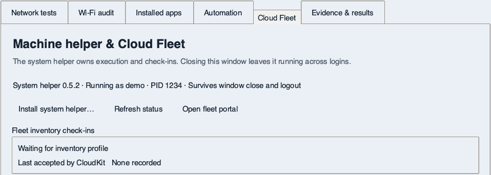
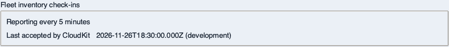
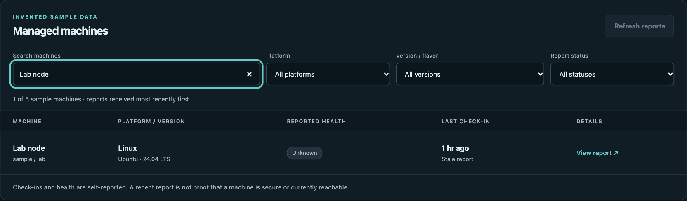
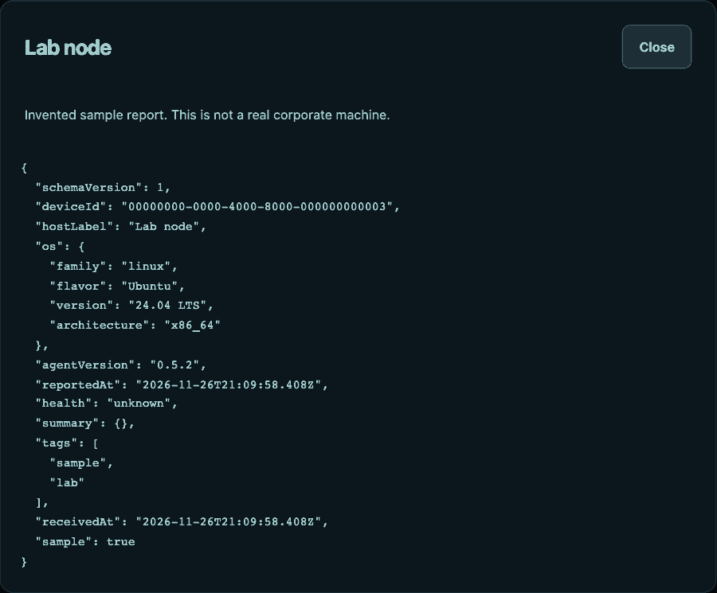
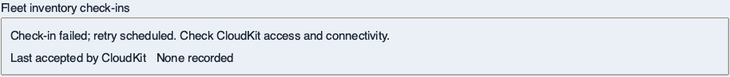

RedAgent 0.5.2 development guide · November 26, 2026
Fleet inventory check-ins
A managed Mac, Windows PC or Linux system appears in Fleet when Apple accepts its first inventory report. Later reports update the same device’s last-seen time. Each machine runs its own RedAgent helper.
This guide covers the private 0.5.2 development build for personal devices. The current Fleet portal uses CloudKit’s development environment. Your administrator must provision the inventory role and key there before a device can report.
1. Check the installed helper
Open RedAgent and choose Cloud Fleet. Select Refresh status and check the helper version. Inventory reporting requires the 0.5.2 helper. The 0.4.0 packages on the public RedAgent download page predate this feature.
If the helper is absent, select Install system helper… in the 0.5.2 app and complete the operating system’s administrator prompt. Return to Cloud Fleet and select Refresh status.

2. Provision each personal device
Your Fleet administrator privately supplies profile.json and inventory-key.pem for the intended CloudKit environment. On each machine you manage, stage the key first and the profile last in the inventory folder.
- macOS
/Library/Application Support/Orbitus/RedAgent/inventory/- Windows
%ProgramData%\Orbitus\RedAgent\inventory\- Linux
/var/lib/redagent/inventory/
On macOS and Linux, use a private folder with mode 0700 and files with mode 0600, readable by the helper account. On Windows, use the installer-created folder and its inherited permissions for SYSTEM, Administrators and LocalService. Make one of those principals the owner of the files.
All participating machines can share one inventory signing credential. Its CloudKit owner must have only the FleetInventoryReporter role for this container. This role can create, read and update device status records across the inventory. Keep the credential in your private device-management channel. Rotating it affects every machine using it.
3. Confirm the first check-in
In Fleet inventory check-ins, look for Last accepted by CloudKit. The first accepted report establishes the device row. The helper uses a local identifier on subsequent reports, including after a restart.

Each report sends the computer name, a stable local identifier, OS family, kernel version, architecture, RedAgent version and UTC time to Apple CloudKit. The inventory check-in supplies an unknown health state and leaves app and vulnerability counts unmeasured.
4. Find the device in Fleet
Select Open fleet portal. Sign in with an account authorized to view your fleet and choose Refresh reports. Under Managed machines, enter the device label in Search machines. For a first lookup, leave Platform, Version / flavor and Report status at their default settings.

Select View report for the matching device. reportedAt is the time supplied by the client. For live records, receivedAt comes from CloudKit’s record modification time. An empty summary means that the client supplied no counts.

5. Recover a missing check-in
- Waiting for inventory profile
- Verify the stage location, filenames and private file permissions for the account running the helper.
- Check-in failed; retry scheduled
- Follow the reason shown in the panel. Check that the machine is awake, its clock is accurate and it can reach Apple CloudKit. Ask your administrator to verify the key owner’s inventory role in the environment named by the profile. Retries begin after 30 seconds and back off to five minutes.
- A receipt is visible locally, but the device row is missing
- Confirm the administrator account and CloudKit environment, clear the search and filters, and select Refresh reports. The Recent filter covers the last 15 minutes.

To stop future reports from a device, have its administrator remove the inventory profile. Fleet retains its last accepted timestamp.